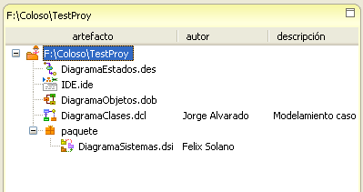
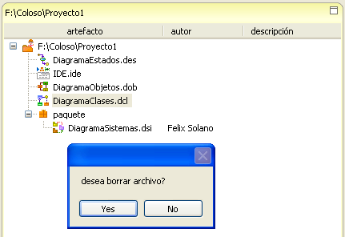
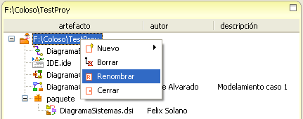
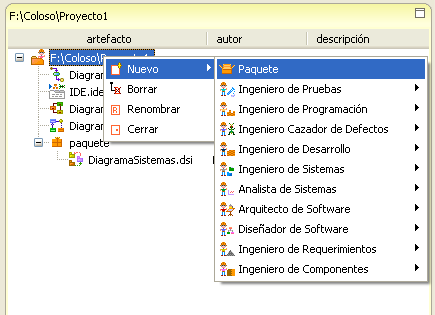
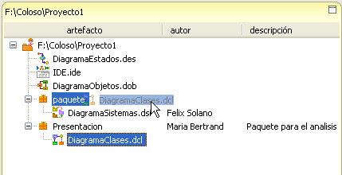
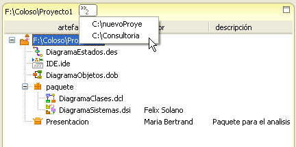

|
Marco de Exposición |
|
El Marco de Exposición se asemeja a un índice de obras de arte, en donde éstas se encuentran organizadas de acuerdo a como la galeria las quiere presentar . Dentro del marco de expresión se pueden ver todos los artefactos asociados al proyecto activo en particular. Adicionalmente se permite crear nuevos, renombrarlos, reorganizarlos y borrarlos. El marco de explosición presenta en la parte superior la dirección donde se encuentra almacenado el proyecto actual, seguido con el nombre de la carpeta del proyecto (que es igual al nombre del proyecto). En el área inferior se listan todos los archivos y paquetes asociados al proyecto, donde se especifíca el nombre del artefacto, el autor y la descripción. Cuando los artefactos son creados, tanto los campos de autor como descripción son opcionales, por lo que estos campos pueden mostrarse vacios en el Marco de Exposición.  Figura 1. Elementos del marco de exposición Borrar: Elimina un artefacto del proyecto y simultaneamente del sistema (no podrá ser recuperado.Para borrar un artefacto, se debe hacer click derecho y posteriormente confirmar la acción. Si se borra un paquete, todos los diagramas dentro de éste serán eliminados tambien.  Figura 2. Borrado desde el Marco de Exposición Renombrar: Permite cambiar los nombres de los artefactos y el proyecto. Para renombrar basta con hacer click derecho sobre el elemento y seleccionar la opción del menu.  Figura 3. Renombrar en el Marco de Exposición Al renombrar un proyecto o un artefacto, el nombre con el que se encuentra almacenado en el sistema (la carpeta o el archivo) cambiará de igual manera. Para este caso el proyecto se ha renombrado a Proyecto1. Cerrar: Clausura el artefacto en caso de que esté abierto en alguno de los otros marcos. Los paquetes se crear mediante click derecho en cualquier elemento del proyecto, simplemente seleccionando nuevo->paquete.  Figura 4. Creación de paquete en el Marco de Exposición Para organizar los elementos dentro del diagrama, estos pueden ser creados dentro de los paquetes pertinentes o simplemente arrastrados al sitio que se desee.  Figura 5. Organización de elementos entre paquetes Cuando varios proyectos se encuentran abiertos, un numero se agrega a la parte superior del marco, al hacer click sobre el se muetran los otros proyectos abiertos.  Figura 6. Multiples proyectos abiertos |